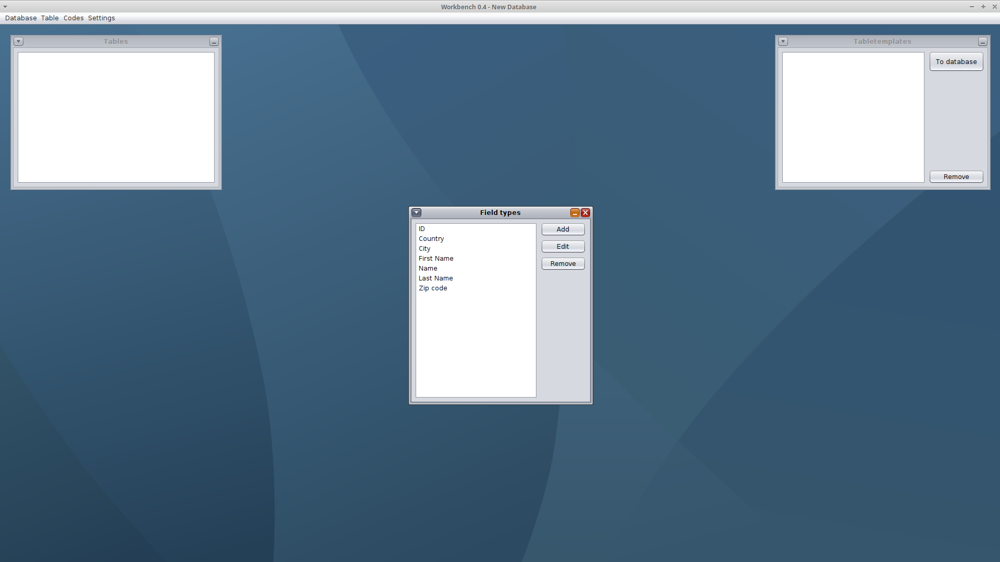
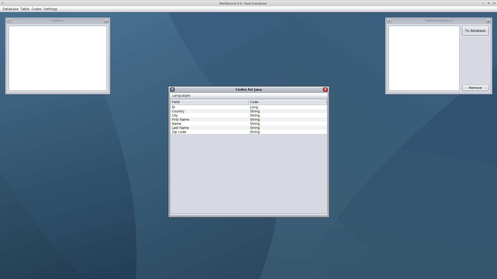
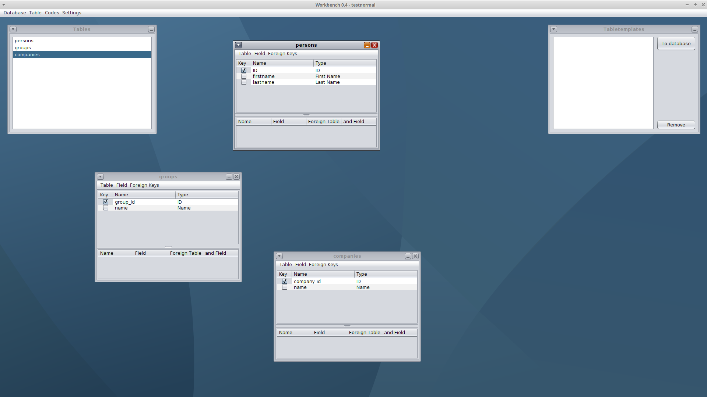
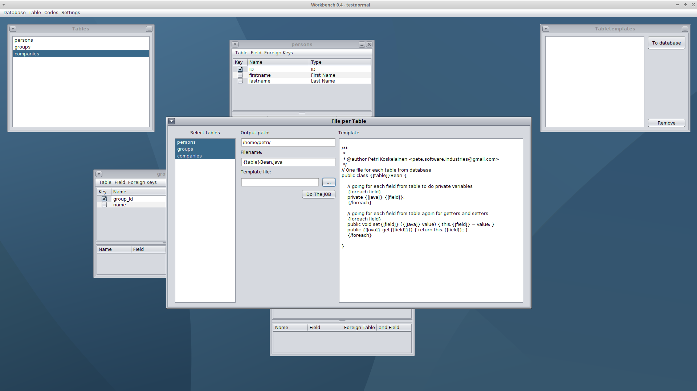

Instructions how to use DatabaseWorkbench
Step 1 - 3 only on the first time, when there is no fieldtypes, languages and codetext for those.
Lettercase DOES matter all the way long.
Step 1
Make own field types.

Step 2
Add programming languages that you will use.

Step 3
Set the language types.

Step 4
Make the database tables.

Step 5 - File Per Table
- Select tables that you want to be converted to code, keep CTRL key pressed to select many.
- Write the output path
- Write the filename. {table} will be replaced table names
- Select template file (... button).
- You still can change template if needed
- Press do the JOB!
- Smile
